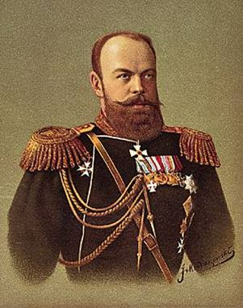
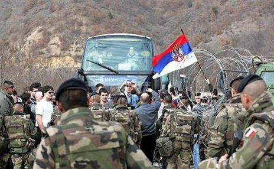
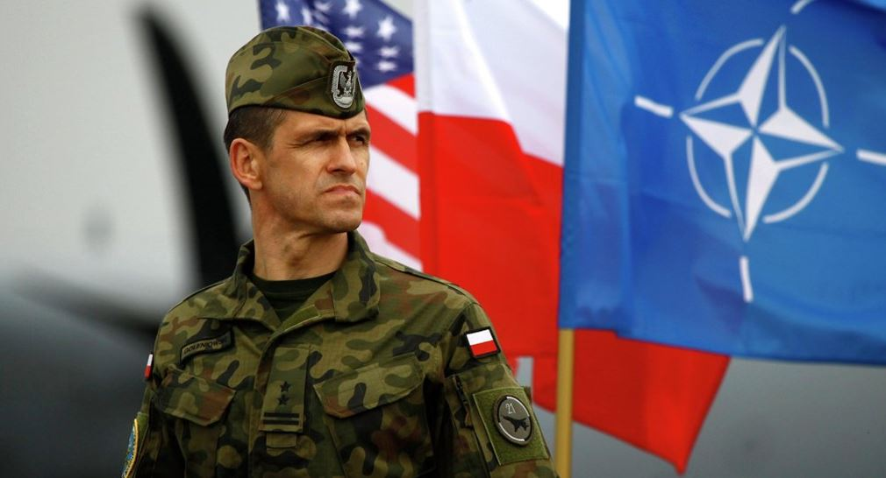
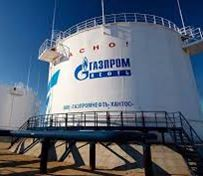
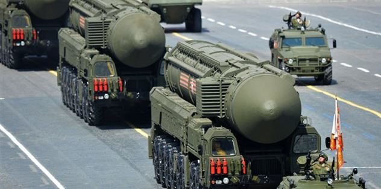
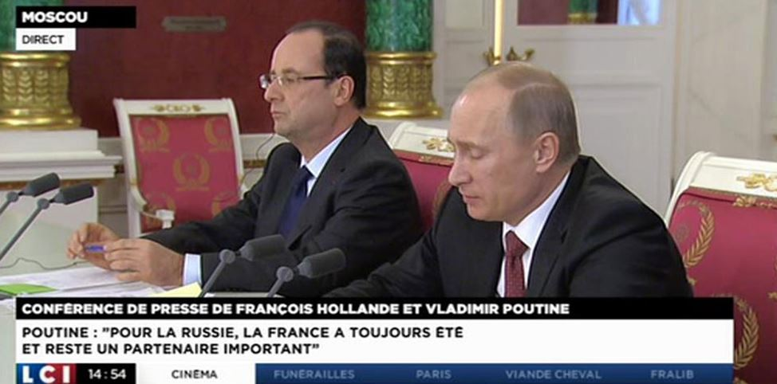
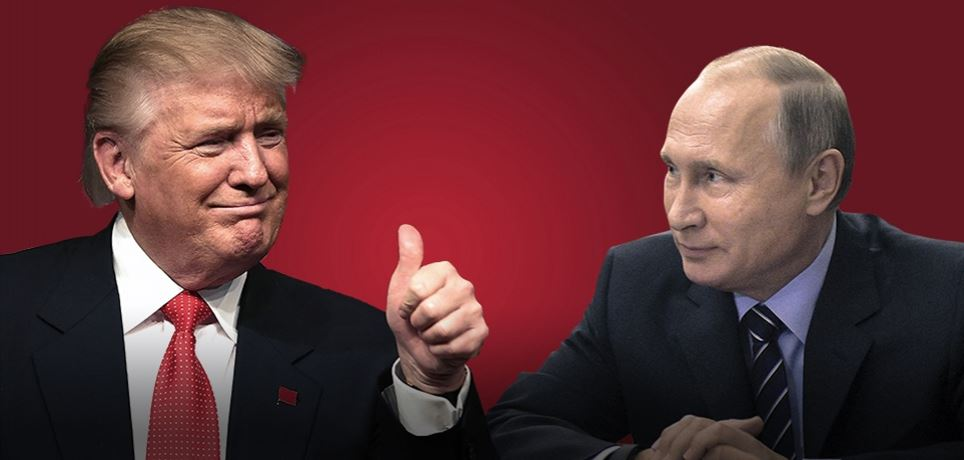

Puissance éminemment continentale, c’est par les actes de ses Tsars que la Russie est entrée dans la politique internationale. Tout au long de l’histoire de l’Empire Russe ceux-ci ont exercé leurs politiques sous forme de conquêtes que ce soit en Europe orientale et centrale, en Asie centrale ou en Extrême Orient. Dès la fin du 18ème siècle la Russie a incorporé le concert de Nations, notamment par sa contribution aux guerres continentales dont elle fut directement ou indirectement un acteur majeur. Au cours de la période révolutionnaire de 1917 à 1921, Lénine prêche une politique internationaliste communiste, période relativement éphémère jusqu’à la prise de pouvoir de Staline qui entraînera l’Union soviétique dans une politique d’annexion et de contrôle dont Yalta sera l’issue en faisant tomber une grande partie de l’Europe sous le contrôle directe du Kremlin durant la guerre froide.
C’est la chute de l’URSS en 1991, sans une quelconque défaite de ses forces armées, qui symbolisera un réel bouleversement non seulement pour la politique étrangère de la Russie mais aussi pour le peuple russe dans son ensemble. L’aspiration légitime du peuple Russe de faire dans un premier temps partie de l’occident dès la fin de l’URSS s’est rapidement trouvée confronté à l’ignorance, le doute ou la suspicion de nombreux pays occidentaux, sous l’effet de la faiblesse des années Eltsine. L’entrée dans l’Otan et dans l’UE de pays qui étaient encore anciennement des pays « frères » de l’ère communiste produisit de vives tensions. L’expansion de l’Otan des années post 90 sera ressentie par les Russes comme une intrusion dans leur pré carré. Aussi rien de bien surprenant que les positions russes de ces dernières années soient le reflet de la défense légitime de leurs intérêts comme puissance politique économique et militaire. C’est dans la politique menée par Poutine que la Russie réaffirmera au fil des années son retour dans le concert des grandes nations et rappeler, s’il le fallait, qu’elle était un acteur incontournable dans la politique internationale qu’il ne fallait pas sous-estimer.
DES ESPÉRANCES DÉÇUES
Depuis la chute de l’URSS en 1991 à la suite de près de 50 ans de tensions entre les deux blocs antagonistes de nouvelles phases de partenariats s’offraient entre la Russie, l’Otan et l’UE. Mais très rapidement la Russie s’était retrouvée, au fil des années rejetée, à l’intérieur du continent, les anciennes républiques fédérées de l’union soviétique en Europe et en Asie centrale devenaient autant de barrières entre elle et ses zones d’interventions traditionnelles. La Russie n’inspirait plus le respect et les occidentaux avaient profité des premières années de confusion politique pour fragiliser et tenter de mettre la Russie hors-jeu sur l’échiquier politique international. Pour les experts internationaux nombreux furent les attitudes jugées méprisantes de part des européens et des américains à l’égard d’un pays qui tentait de retrouver un nouveau souffle, mais qui semblait s’enliser dans la corruption, des difficultés économiques graves ainsi que dans de différentes actions militaires comme au Haut Karabagh en 1992, le conflit Abkhaze, les deux guerres de Tchétchénie, etc. Profitant des revers subis par la Russie sur la scène internationale durant les années 90, l’UE et l’Otan n’avaient pas jugé utile de réfléchir aux conséquences funestes de leur manière d’agir envers la Russie. C’est ainsi et en toute méconnaissance de certaines préoccupations légitimes russes, surtout liées aux réactions négatives de l'opinion publique, sensible à la thématique des formations ultra-nationalistes que l’UE et l’Otan s’élargiront successivement à d'anciens pays satellites et à trois pays baltes issus de l'URSS, ce qui nourrira en Russie les premiers griefs.
Or, ces élargissements consécutifs dans l’est de l’Europe auraient dû rendre nécessaire l'établissement entre l'Union européenne et l'Otan d'une part, et la Russie d'autre part, la recherche d’un véritable partenariat pour la stabilité et la prospérité du Continent. Aucune démarche n’a pourtant sérieusement été entreprise dans ce sens.
L’impact psychologique d'un évènement aussi fort a modifié la perception du peuple russe de son environnement immédiat. Il a produit un choc non seulement dans l'opinion publique mais aussi au sein de l'appareil d'Etat et dans les forces armées. L’extrême sensibilité du thème a souvent été manifestée, parfois de manière très abrupte. Les Russes ont eu le profond sentiment d’avoir été volontairement dupé par l’Occident qui ne cherchait qu’à les affaiblir. L’erreur des élites russes de l’époque était de supposer que l’Occident aiderait d’une manière ou d’une autre la Russie à se relever1.
RETOUR AU RAPPORT DE FORCE ENTRE LES OCCIDENTAUX ET LA RUSSIE
L’Alliance étant ouverte à d’autres Etats européens susceptibles de favoriser le développement des principes de ce Traité et de contribuer à la sécurité de la région de l’Atlantique Nord, et tout juste trois ans après la dissolution du Pacte de Varsovie, le sommet de l’Otan du 10 janvier 1994 amènent 16 dirigeants alliés à proposer un élargissement aux Etats démocratiques de l’Est. C’est tout naturellement que les dirigeants alliés, réunis à Madrid le 8 juillet 1997 inviteront la Hongrie, la Pologne et la République tchèque à engager des pourparlers d’adhésion avec l’Alliance. L’extension de l'Alliance atlantique aux frontières de la Russie fut perçue comme la reprise d’une politique remontant à la guerre froide et a, de facto, entretenu des inquiétudes. La première grande crise aiguë ne se fera pas attendre et interviendra en 1999. En effet, la dernière année du mandat de Boris Eltsine sera marquée par les divergences entre la Russie et l'Otan sur la question de l'indépendance de la province de leur allié historique serbe du Kosovo. La majorité de membres de l’Union européenne soutenant officiellement l’indépendance de la province alors que Moscou s'y opposait fermement. Considéré comme un partenaire secondaire quelconque, la contestation officielle de la Russie quant aux opérations de l’Otan au Kosovo, engagées sans l'aval du Conseil de sécurité des Nations Unies, n’avait pu que souligner l'isolement de la Russie au niveau international. En conséquence, l'Otan prépara son élargissement concomitant avec celui de l'UE et le 29 mars 2004, l'Estonie, la Lettonie, la Lituanie, la Bulgarie, la Roumanie, la Slovaquie et la Slovénie entraient dans l'organisation, en portant à 26 le nombre de membres. Parmi ces États, trois d'entre eux étaient des Républiques soviétiques à l'époque de la guerre froide, et les autres des satellites soviétiques. L’intégration des trois Pays baltes cristallisait une fois de plus tous les états d'âme et rancœurs russes à l'égard de cette recomposition majeure du continent européen. Les griefs légitimes exprimés à l’encontre de l’UE furent multiples, mais le plus important d'entre eux concernait le sort réservé aux minorités russophones en Estonie et en Lettonie. La réaffirmation de la puissance russe a été la conséquence de ces tensions croissantes et successives depuis le début des années 90. Au fil du temps les points de conflits ne cesseront de s’accumuler. À la suite des révolutions de couleurs survenues en Géorgie puis en Ukraine, ces États avaient fait part de leur volonté d'adhérer à l'Alliance, également rejoints en ceci par la Moldavie. Qualifiées de « zones d’intérêts privilégiés » en 2008, ces candidatures étaient inacceptables2 pour le Kremlin et n’aboutirent pas.
Une autre pierre d’achoppement sera le système de défense antimissile de l’Otan qui doit mettre en commun les moyens de défense antimissile des états membres, afin de les protéger d’une menace balistique. Lancé par Barack Obama le 17 septembre 2009 il se heurte toujours à la Russie qui se sent directement visée et menacée. Puis c’est la crise du 23 février 2014, où des forces spéciales russes viennent sécuriser la Crimée après que l'opposition ait pris le pouvoir à Kiev en Ukraine. L'Union européenne, tout comme les États-Unis, condamneront Moscou, l'accusant d'intervenir militairement en Crimée et suspendent les négociations de libéralisation des visas tout en prenant des sanctions économiques. Ils refuseront de reconnaître le référendum d'autodétermination de la Crimée et son rattachement à la Russie. Au prétexte que la guerre du Donbass soit une déstabilisation délibérée menée par la Russie, l'Union européenne, de concert avec les États-Unis (ou aux ordres), prend une série de sanctions économiques contre Moscou. Cependant force est de constater que les opérations de sanctions n’ont à ce jour atteint aucun des objectifs voulus par les occidentaux mais porté plutôt un préjudice considérable au commerce extérieur de nombreux pays de l’UE et ont largement renforcé le sentiment patriotique russe.

UN PAYS AUX AMBITIONS GLOBALES
L’influence croissante de Moscou sur la scène internationale n'a pas été obtenue par le renforcement des structures multilatérales mais par la promotion active d'accords bilatéraux, tout particulièrement dans le domaine énergétique, en conformité avec les préoccupations stratégiques de la Russie. Son statut de puissance mondiale, sa qualité de membre permanent du Conseil de sécurité des Nations Unies lui permet d'aborder tous les grands dossiers de politique internationale et d'être associé à leur règlement pour un grand nombre de crises régionales dans lesquelles sa diplomatie est engagée, que ce soit en Asie, au Moyen-Orient ou dans les Balkans. Son utilisation du veto au Conseil de sécurité des Nations Unies est un rappel à l'adresse de la communauté internationale et des autres membres permanents que la Russie n'entend pas se priver des droits que lui confère son statut. La défense de l'autorité des Nations Unies dans la prévention et la gestion des conflits constitue un axe primordial de la politique étrangère de la Russie, moins par attachement conceptuel au multilatéralisme, que parce qu'elle y voit le moyen de limiter les possibilités d'action unilatérale des Etats-Unis. Très attachée à sa souveraineté et plus réticente à l'idée de supranationalité, assimilée à celle d'ingérence étrangère, la Russie soutien les institutions multilatérales comme un choix tactique, visant à préserver et renforcer son influence. Les questions stratégiques et de contrôle des armements constituent l'autre levier permettant à la Russie d'affirmer son rôle mondial, en discutant d'égal à égal avec les Etats-Unis. Elle conserve un arsenal nucléaire conséquent. En dépit des difficultés liées à la maintenance des forces nucléaires et à leur modernisation, la situation des armes nucléaires russes reste une question majeure pour la sécurité mondiale. La restauration d'un appareil de défense crédible constitue une autre des priorités du président Poutine.
Le budget de la défense a été revu à la hausse, l'objectif avéré est de transformer l'armée russe en forces armées mieux entraînées et plus mobiles, avec une forte composante professionnelle et des équipements de haute technologie.
Aujourd’hui, l’action du gouvernement Russe se place clairement dans le cadre de la lutte contre le terrorisme international, ce qui aurait dû impliquer un plus large soutien à sa cause en Europe et aux Etats unis ; mais le soutien de la Russie au régime de Bachar al Assad empêcha toute coopération dans ce domaine. En dépit de cela, les opérations militaires russes en Syrie se sont soldées par un succès, contraignant les forces rebelles à quitter Alep-Est et les occidentaux à revoir leur copie.
LE RÔLE PRÉPONDÉRANT DU PRÉSIDENT POUTINE
C’est entre les mains de Vladimir Poutine que le peuple russe a mis en 2000 tous ses espoirs pour incarner le renouveau et la volonté manifeste du peuple russe de voir son pays se réapproprier un rang de grande puissance mondiale. Après un second mandat (2004-2008) puis l’intermède Medvedev (2008-2012) sa réélection en 2012 l'horizon politique semble clairement dégagé jusqu’en 2018 voire 2024. Le 3ème mandat de Vladimir Poutine se déroule dans un contexte de renforcement considérable du pouvoir présidentiel. Ses enjeux se concentrent sur la mise en œuvre de profondes réformes de modernisation administrative et économique, en vue de faire franchir à la Russie une étape décisive de sa transition. Depuis la fin de l'Union soviétique, jamais un exécutif n'a disposé d'une assise aussi solide et jamais les contrepouvoirs n'ont paru aussi faibles. L'absence ou la marginalisation, dans le débat public, de formations crédibles de sensibilités libérales et sociales-démocrates, laisse la totalité de l'espace politique au Président. Alors que les dernières années de la présidence de Boris Eltsine ont été marquées par l'instabilité politique, avec ses changements de Premier ministre répétés, l’image d'homme politique moderne, travailleur, réactif, reconnu et écouté sur la scène internationale, tranche évidemment avec celle, très dégradée, de son prédécesseur. D’ailleurs, l'influence des derniers représentants de la période Eltsine se sont complètement estompée au profit de personnalités directement liées au Président. Le résultat des dernières élections législatives traduit un réel soutien populaire à Vladimir Poutine qui dispose de la confiance populaire. Il aura réalisé des progrès sur la voie du développement économique et de la modernisation de son pays. L'assise politique très large dont il dispose au sein de la société russe constitue un atout pour accélérer la mutation de l'économie et de la société russe. Vladimir Poutine incarne, aux yeux de son peuple, la restauration de l'autorité de l'Etat, y compris au travers des manifestations d'autorité dont il a fait preuve. Il bénéficie à ses débuts également d'une amélioration de la conjoncture économique qui a par exemple permis d'assurer le paiement régulier des traitements et pensions, mettant fin à l'un des dysfonctionnements les plus flagrants des pouvoirs publics.
Soucieux de préserver le statut de puissance mondiale à son pays, Vladimir Poutine conduit une politique extérieure plus active, en s'appuyant pleinement sur les ressorts de la communication. Cette approche pragmatique n'exclut pas la manifestation de désaccords parfois vifs, dès lors que la Russie estime ses intérêts nationaux en jeu, et l'utilisation de tous les autres moyens afin d'accroître son influence.
QUEL AVENIR AVEC LES ETATS UNIS DE TRUMP ?
Les ouvertures de rapprochement du nouveau Président Donald Trump sont à saluer dans le sens où le monde est menacé par l’islamisme radical. Il faut espérer que l’administration Trump rétablisse une meilleure relation basée sur l’acceptation de l’existence d’intérêts propres à la Russie et la recherche par la négociation et non par le Diktat de solutions communes face aux défis du monde actuel. Ce qui ne fut pas et de loin avec l’administration Obama. Aujourd’hui ce dialogue se heurte néanmoins à des difficultés réelles de compréhension mutuelle que ce soit avec l'Union européenne ou avec l'Alliance atlantique. Le président Trump devrait rapidement saisir l’occasion pour rencontre le président Poutine afin de renforcer la prise de conscience de l'importance et de l'intérêt, pour la stabilité et la prospérité du monde, d'un partenariat stratégique avec la Russie contre le terrorisme islamiste. Il n'en demeure pas moins qu'un partenariat stratégique avec la Russie répond également aux intérêts fondamentaux des pays de l’UE, bien que cela ne semble pas vraiment à l’ordre du jour. Ce seront les futures relations Russo-américaines qui commanderont l’avenir des relations de l’UE et de l’Otan avec la Russie.

EN CONCLUSION
Le regain des critiques contre la Russie au cours des dernières années ne doit pas masquer les possibilités de trouver, dans le cadre régulier du dialogue et de la coopération internationale, des solutions à nombre de questions soulevées par le Président Poutine. Il est essentiel de renouer avec l'établissement d'un partenariat solide avec cet acteur majeur du continent européen. Les intérêts communs entre l'Europe et la Russie sont considérables, que ce soit sur les grands dossiers internationaux ou sur des préoccupations de sécurité concernant plus spécifiquement le continent dans son entier : stabilisation des zones de conflit, lutte contre le terrorisme et lutte contre les trafics illicites, la criminalité transnationale organisée et l'immigration irrégulière. Des progrès énormes sont à faire pour relancer la relation Russie-Union européenne, et la transformer en un partenariat basé sur la confiance pour renouveler le stade d'un partenariat confiant.
A.W.
1Car en 1997, dans le cadre de l'Acte fondateur OTAN-Russie, les deux parties avaient déclaré qu'elles ne se considéraient plus comme des adversaires et avaient établi des mécanismes de consultation et de coopération. Elle avait par ailleurs précisé qu'elle privilégierait en son sein l’interopérabilité, l'intégration et la capacité de renforcement nécessaire plutôt qu’en recourant à un stationnement permanent supplémentaire d’importantes forces de l’ordre. Ces principes ont été réaffirmés en 2002, alors que s'engageait la deuxième vague d'élargissement.
2Il est fortement possible que ces propositions ont joué un rôle dans la présence de troupes russes en Géorgie à la suite du conflit en Ossétie du Sud et qui amena le président Medvedev de reconnaître unilatéralement l'indépendance de l'Abkhazie et de l'Ossétie du Sud.
Partager cette page